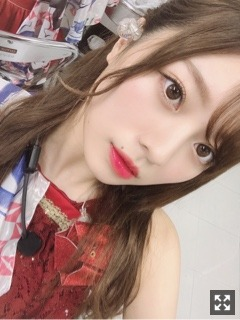

夏の匂いがした
みなさまこんにちは！！
乃木坂46の
梅澤美波です！
ここ数日、ものすごい暑さですが
皆様いかがお過ごしですか？
数分歩いただけで汗が、、
暑さに弱い梅澤ですが
頑張って乗り切るぞ〜
全国ツアー福岡終えました！
最っ高に楽しかったなあ。
私自身初福岡でした！与田の地元︎︎︎︎✌︎
盛り上がりも凄かったし
何よりご飯が美味しかった〜

１日目の髪型。
映像見返してはまだまだだなあと、
感じることの方が多いですが。
その気持ちを大切にしつつ
見つかった課題を超えられるよう大阪、神宮へ備えます！
当たり前ではない景色を目に焼き付け、
東京に戻りました。
来年も、戻ってこられるように
また一年頑張ります！
with9月号、発売中です！
「通販ブランドで買う8月>9月の着たおし服」企画と、
withで初のメイク企画
「らしさを伝える印象メイク」では
イガリシノブさんに
メイクして頂きました！
とっても嬉しい、、
ぜひチェックてください！
ふふふ
大好きなお二人です。
２４枚目シングル
いつも応援して下さる皆様、
本当にありがとうございます！
自分には何が出来るのか、
永遠の課題だと感じています。
自信が無くても、
自分の力を信じ、目の前の壁に
立ち向かわなければならない事がほとんどです。
いろんな節目で振り返るときに、
いつも後悔してばかりで
過ぎていった時間に悔いが残ることが多いなあと。
そんな自分とお別れして
少しずつ自分の納得のいく時間を歩めるように
変わりたい。
時には自分の意志をきちんと伝えることも大切だなあと、最近は特に感じます。
挑戦を忘れずに、
自分の中での目標や夢もしっかり持って
この期間過ごしていきます！
大好きなグループにいられることが、
本当に幸せです。
私に出来ることを考え、
少しでも今のグループに力になれる存在であれるよう
自分を確立してしっかり、しっかり立っていたいと思います！
そして４期生から
さくらちゃん、あやめちゃん、かっきー、
本当におめでとうございます！
不安もあるかと思いますが、
私たちが今まで先輩方に助けて頂いてきたように
今度は支えになれるように！！
３人の描く未来が
輝いていますように。
楽しく、伸び伸びと活動出来ますように。
私たち後輩がもっと逞しく
堂々としなくちゃ。
前を向かなくちゃ！！
とにかく楽しむんだ！！
楽しむんだ！！
沢山の方に愛される楽曲になりますように。
黒髪に
しました
握手会の申し込みも始まりました。
もう１２月の握手会の日程までありますね
一緒に過ごせる時間を
楽しみにしています。
クリスマスやハロウィン、
衣装考えておきますね◎
あ、でんとお仕事終わりご飯行く時
プリクラを見つけたので撮りました。
ポーズ何したらいいか分からず
終始しどろもどろしてました、
マネキンポーズとジコチューポーズしました
落書き、学生時代を思い返して頑張ったら
でんが褒めてくれた、ふふ
先日出演させていただいたTGC富山、
昨日の握手会などなどはまた後日更新します。
それでは、また
おやすみなさい
最近は幸せと感じる瞬間に
涙がこぼれそうになります〜
笑える時間が本当に幸せだなあ。
アイドル人生無限ではなく有限なので。
笑顔いっぱいで！過ごしたいです！
ああ髪色いつまでもつかなあ。（笑）
Original：https://www.nogizaka46.com/s/n46/diary/detail/51869?ima=4943&cd=MEMBER